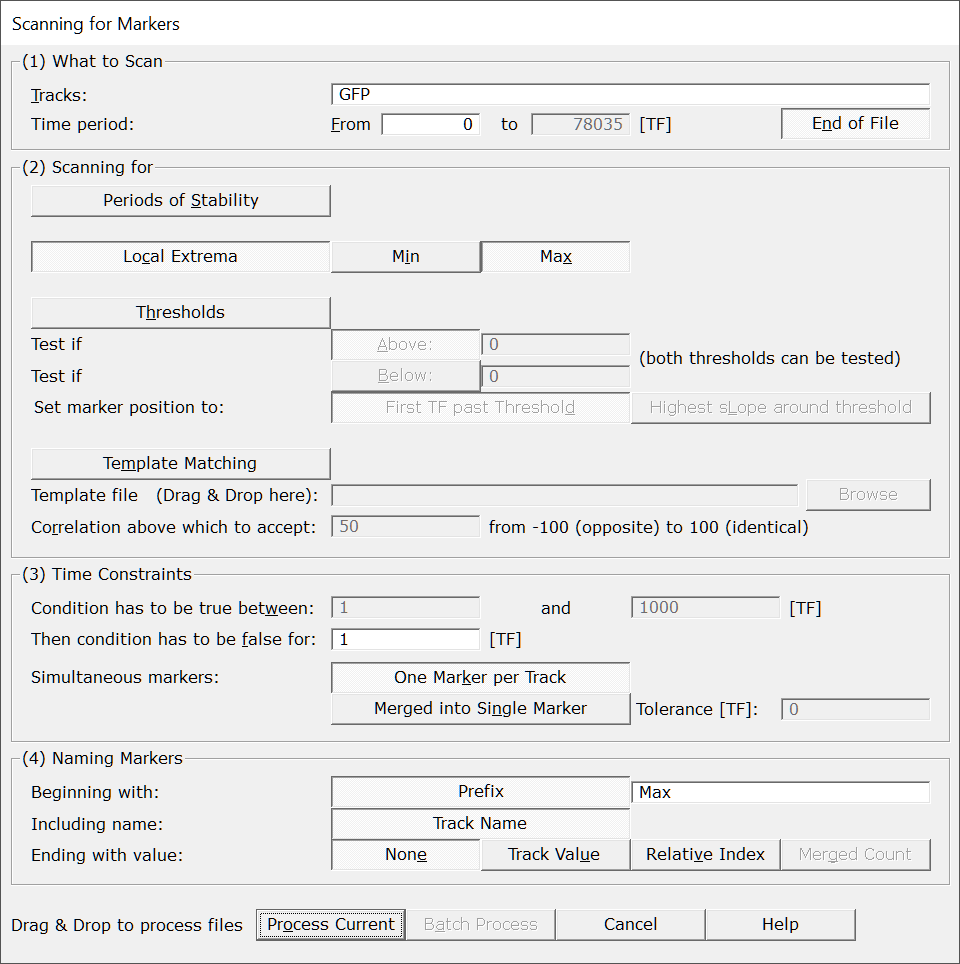
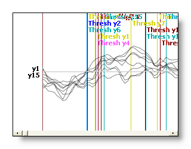
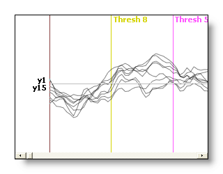

This is a very versatile toolbox used to generate new markers from the content of tracks. These markers could then be used either for browsing the data, or to perform any sorts of computations, like averaging.
There are four methods to scan tracks:
Periods of Stability: used when tracks contain kind of on/off, plateau-like encoding (like hard-wired triggers).
Local Extrema: used to search for local minima and maxima of tracks (including the GFP).
Thresholds: used to detect when tracks go beyond or fall below a given threshold.
Template Matching: used to detect a spatio-temporal pattern on all tracks at once.
The markers resulting from the scan are added to the EEG's associated .mrk file, which you can edit or re-process yourself for more advanced purposes.
There is certainly a trial and error phase before you find the right parameters. It may be a good idea to first select a short time interval and/or only a few tracks before running the scan on the full file. Also don't forget to delete previous markers before re-doing a whole scan, otherwise they will simply cumulate!

|
What to Scan |
|
|
Tracks: |
Actual tracks to analyse. Each track will be scanned independently of the others (except with Template Matching, which operates on maps, i.e. on all tracks at once). Also, selecting some tracks from the display before calling this dialog will pre-fill this field. |
|
Time Period: |
The time range to scan, pre-filled with the current time selection if it exists, or the option End of File otherwise. |
|
From |
First time frame to be scanned. |
|
to |
Last time frame to be scanned. |
|
End of File |
Automatically set the last time frame to export to the actual end of the current file . Useful in Batch Mode, if the files have different lengths. |
|
|
|
|
Periods of Stability |
A track has to remain on a constant level for some time. The level itself does not matter (anything non-zero), the track has just to be constant. |
|
Local Extrema |
Finding local minima and/or maxima. |
|
Min |
Scan for local minimum. Use some low-pass filter to reduce the sensitivity / scale of this detection. See this note. |
|
Max |
Scan for local maximum. Use some low-pass filter to reduce the sensitivity / scale of this detection. See this note. |
|
Thresholds |
A track has to be above or below some threshold. Note that both above and below criterion can be selected simultaneously. In that case, you end up with an interval testing. |
|
Test if Above: |
The track has to be above the specifed value, positive or negative. |
|
Test if Below: |
The track has to be below the specifed value, positive or negative. |
|
Set marker position to: |
|
|
First TF past threshold |
The marker is strictly inserted at the first TF where the test is found positive. |
|
Highest slope around threshold |
The detected position will drift to wherever side which has the highest slope , and will stop there. The purpose of this option is to help align raising-edge events. |
|
Template Matching |
This has to be thought as trying to find a sequence of maps in the data. Tracks are not considered individually, but as a whole pattern (a map). Plus, the maps also evolve in time. See this note for more details about how template matching is done here. |
|
Template file: |
The file with the template to serach for. It should have the same number of electrodes as the EEG file to scan. It can be any kind of EEG file format. |
|
Correlation above which to accept: |
Specifies the correlation value (in percentage) above which the test will be positive. Correlation does account for sign, that is, correlation -90 is below 50. |
|
Time Constraints |
|
|
Constraint the test chosen by defining time limits. F.ex. we can be interested in short duration plateau, at least 3 TF longs, but shorter than 30 TF. In case you don't care, set a wide range, like from 1 to 10000! These fields don't apply to local extrema, which by definition are only 1 TF long. See this note to visualize how the time constraints work . |
|
|
Set the minimum amount of time after the test fails before a new marker can start again. Should be at least 1. See this note to visualize how the time constraints work . |
|
|
Simultaneous markers: |
Each track can generate its own marker, so we can deal with this. These options are off when Scanning for a template . |
|
One Marker per Track |
Let each simultaneous marker remain that way. Use the Naming Markers options to help sort out who is who! |
|
Merged into Single Marker |
Post-process markers that lie in a given range, and merge them into a single one. See this note. Also see the Naming Markers to also merge the names. |
|
Tolerance [TF] |
Give a maximum time extent within which "simultaneous" is meant. Set to 0 to consider only perfectly aligned markers. |
|
You can tune the markers' name to your liking. |
|
|
Beginning with Prefix |
Optionally start all the markers with this prefix. By default, it reflects the kind of Scanning method you chose, like "Stab", "Thresh", etc... |
|
Including name |
Optionally include the track name. When Scanning for a template, this is replaced by the Template file name. Off when merging markers. |
|
Ending with value: |
The following options are quite context sensitive! |
|
None |
What it says. |
|
Track Value |
The value of the track that generates the marker at that position. Useful f.ex. to retrieve the Max value of a track. When Scanning for a template , this is replaced with the Correlation value. Off when merging markers. |
|
Relative Index |
Add an index corresponding to the relative position of the track generating the marker. Indexes are not 1, 2, 3, 4... but in powers of 2, like: 1, 2, 4, 8 ... So we can add these values when merging markers together: f.ex. tracks 3 and 4 together will produce a code of 4 + 8 = 12. If you don't see the use of this, well, just forget it! Off when Scanning for a template. |
|
Merged Count |
When (and only when) merging markers, add a count of how many markers were doomed to be merged. Off when Scanning for a template. |
|
Process Current |
Enabled when called from an EEG window, the scan will apply to this file only.
This button remains disabled until all the parameter dialogs have received enough (and consistent) informations. |
|
Batch Process |
Enabled when not called from an EEG window:
This button remains disabled until all the parameter dialogs have received enough (and consistent) informations. |
|
Cancel |
Quit the dialog. |
|
Help |
Launch the Help to the right page (should be here...). |
The markers are added to the external .mrk file associated with the EEG file. Remember to move all files (EEG and its associated clique, plus the marker file) if you move the EEG to another directory.
Verbose file .vrb (text), showing all the parameters.
The scan is run on the tracks as they appear to you, that is with the current reference and filters. Therefor changing these settings can dramatically affect the generated markers. This can actually be used for the best, for example when searching for local maxima.
The detection occurs at the reversal of the signs of 2 successive derivatives.
If there is a plateau on either side, this will make one of the
derivative null, therefore no sign inversion can occur (hence no detection).
The scan will output every little peaks it finds, which may be too much details for you. In this case, just apply some filters (especially low pass) before running the detection.
The vector used to compute the correlation is a big vector made with all the time frames for all the tracks (of the template). F.ex. a template of 100 time frames for 125 electrodes is a vector of 100 * 125 = 12500 dimensions. In this way, we will retrieve only very specific patterns, both in space and in time.
The correlation values does not take into account the power of the signal, but just its shape.
When the current time window first correlates above the threshold, the scan continues and seeks for the highest peak of correlation of the period before the correlation goes below the threshold. Well, sounds difficult to make it in simple words, but simply gives you what you actually expect! The marker position within the selected time window is put where the template has its maximum GFP. In fact, it is not that important, what matters is that the triggers be put at the same offset for all the windows.
The marker position is set at the position of highest GFP. Also see the Naming Markers options.
Consider a Stability scan on one track. To create a marker, the condition (plateau) should last within the given limits. Then the next marker can not start before the gap is filled:
|
Condition is false |
Condition is true |
Condition is false |
|
Condition should last within the time range specified |
Gap should be at least this long |
|
|
|
| | |
|
|
| <- Marker insertion |
Next marker allowed from here -> |
Merging markers is useful to consolidate the markers resulting from individual tracks into a more synthetic information. We can get the information of how many tracks were successful within a short time range. It can also be used to fusion trigger codes spread across different tracks.
We ran an Above Threshold 0 scan, first without merging markers (i.e. one marker per track, kind of a mess), then with merging markers within 8 TF range (and showing the count of merged markers in the names):

Also see the Naming Markers options.
Here are a few examples to get a grasp on all the possibilities from the combinations of options.
Note however that some options could be hard to figure out when combined together. F.ex. scanning for Thresholds Above, plus shifting to the maximum slope, plus merging simultaneous markers with a wide range, plus Naming only with a Prefix... Unless you really want it!